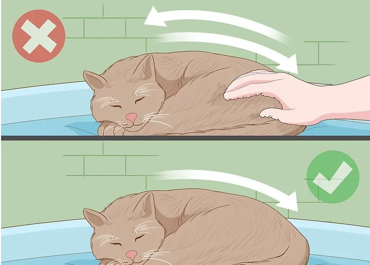

HOW TO PET A CATüê±
Petting a cat may sound simple, but for children or people who haven't spent much time around cats, it's important to know the do's and don'ts of approaching and touching a cat. Petting in the wrong spot or using too much force or speed can agitate some cats, causing them to bite or scratch. Experts recommend letting it happen on the cat's terms: seek permission to touch them, and let the cat have control over the interaction. There are a few places where it's hard to go wrong: areas where cats have scent glands are perfect for petting. Spreading their scent imbues their environment with a familiar smell, which in turn makes them feel happy and content. Knowing where to touch, and when to stay away, can help ensure that both of you enjoy a little cat-human contact.
Focusing On Areas With Scent Glands
1. Start With A Soft Chin-Scratch
Use your fingertips or fingernails to gently rub the chin, particularly where the jawbone connects to the skull. It's possible the cat will push into your stroke or jut out his/her chin, both signs of enjoyment.
2. Focus On The Area Between Or Behind The Ears
Use the pads of your fingers and apply gentle pressure. The base of the ears is another scent-marking spot for cats. If s/he bumps his/her head against you (called "bunting"), s/he's marking you as hers.
3. Pet the cat's cheeks just behind the whiskers.
If the cat likes this, s/he may rotate his/her whiskers forward, effectively asking for more.
4. Run the back of your hand gently along the side of the face
Once the cat is warmed up, use your middle finger to stroke the cat's "mustache" (just above the upper lips) while encircling his/her whole face and stroking the top of the head with your thumb. The cat is yours.
5. Stroke the cat from forehead to tail
Pet the forehead, then run your hand from forehead to the base of the tail, going from head to tail repeatedly. Massage his/her neck muscles by pinching gently. Apply gentle pressure and make it a continuous, slow motion. Work only in one direction (forehead to tail), as some cats do not like back-to-front strokes.
- Don't touch the tail or move your hand along to the side.
- If the cat likes what you're doing, s/he'll arch his/her back to add more pressure to your hand. When you bring your hand back to where you started, the cat may rub her forehead firmly against your hand to encourage you to do it again. If the cat puts her ears back, cowers away from your hand, or just walks away, stop petting.
- You can scratch gently as you bring your hand down along the cat's back, but don't stop at one spot and scratch there. Keep your hand moving.
- Apply a little pressure at the base of the tail, though with caution. This is another scent gland area, and there are cats that like getting scratched right here. Others, however, have a habit of suddenly snapping their teeth at your hand when they've had enough.
Letting The Cat Come To You
1. Let The Cat Sniff You Before You Pet It So It Can Become Comfortable With You
Extend a hand or finger and allow the cat a chance to touch his/her nose to you.
- If s/he shows no interest in your hand or just stares at it suspiciously, reconsider your intention to pet her. Try some other time when the cat may be in a different mood.
- If the cat sniffs your hand, meows, and then rubs her chin or the side of his/her head against it, or brushes the side of his/her body on you, chances are s/he is open to being touched. Open the palm of your hand and softly touch her body.
2. Wait For The Cat To Bump His/Her Head Against You
When a cat bumps his/her head into your hand, it's a signal s/he wants attention. If you are busy at the moment, at least pet her once or twice, to let the cat know you aren't ignoring his/her.
3. Pet The Cat Once If S/He Jumps Into Your Lap And Lies Down
See if s/he fidgets. If s/he does, it may be that s/he just wants to lie there and relax, as humans are a great source of body heat. If s/he doesn't fidget, you can continue to lightly stroke his/her spine
4. Stroke A Cat When S/He's On Her Side
Cats love to be petted when they are on their sides. Lightly stroke the side that is facing up. If it meows or purrs, it may be communicating enjoyment.
5. Understand how your cat communicates
The cat makes some low audible sounds (called purring). Purring is one way a cat signals that it feels sociable and wants attention. When accompanied by hip bumps, ankle twining or head bumping, it means your cat wants you to pet it right now. Sometimes one stroke is all the cat wants, like a handshake or a greeting, rather than a long hug and snuggle session.
The loudness of a cat's purring denotes its happiness level. The louder the purring is, the happier the cat is at the time. A soft purr means that it is content, a loud purr means very happy. Excessively loud purring means over-excessive happiness, which can sometimes switch quickly to annoyance, so be careful.
6. Watch For Signs That The Cat Does Not Want To Be Petted Anymore
Sometimes even petting that feels good to the cat can become overstimulating or irritating, particularly if it is repetitive. If you're not paying attention, the sign to stop may come in the form of a soft, inhibited bite or scratch. Often, however, the cat gives several subtle signals before biting that he/she does not want to be petted anymore. Look for these advance warnings, and if you see them, stop petting:
- Ears flattening against the head
- Tail twitching
- Fidgeting
- Growling or hissing
Learning What to Avoid

1. Keep Your Petting From The Head To The Tail And Don't Switch Directions
Some cats do not like getting stroked from tail to head.
2. Don't Pat The Cat
Some cats enjoy it, but some don't, and if you're not used to being around cats, you're better off not experimenting unless you want to risk a bite or scratch.
3. Stay Away From The Belly
When cats are relaxed, they might roll onto their back and expose their belly. Don't always take this as an invitation to rub their tummy, as many cats don't like that at all. This is because in nature cats must be careful to protect themselves from potential predators (as opposed to dogs, who are more confident in this regard – and love having their bellies scratched). The stomach is a vulnerable area where all the vital organs are located, so lots of cats will instinctively bare teeth and claws if touched here.
- Some cats do like it, but they interpret it as an invitation to play rough or wrestle with claw-grabbing and scratching. They'll wrap their claws around your hand or arm, bite it, and scratch at it vigorously with their front and back paws. This is not always an attack; it's how some cats "wrestle."
- If a cat grabs you with its paws, hold still and let the cat disengage his/her claws. If necessary, reach over with your other hand and gently pull the paw back to unhook the claws. Cats often scratch deep when they don't intend to if their claws get stuck. They use claws to hold and grab, so when the message is for you to stop moving your hand, they'll stop if you stop.
4. Approach The Feet With Caution
Don't play with a cat's feet unless you know the cat well and know s/he likes having him/her feet played with. Start just by petting the cat to get him/her relaxed, then ask permission to stroke him/her feet by touching one foot once with your finger.
- Many cats don't like their feet handled at all, but can be trained into it for activities like claw clipping through a slow, successive reward system.
- If the cat doesn't object, lightly pet that foot with one finger in the direction the fur flows (from wrist toward toes). At any point the cat pulls his/her foot away, hisses, flattens his/her ears or walks away, stop.
Source : Wikihow